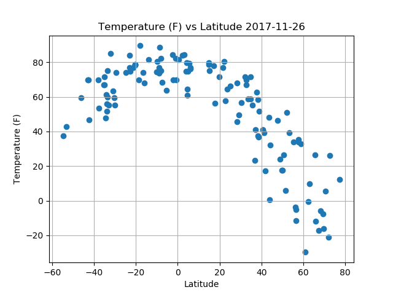

Max Temperature

This visualization plot illustrates Temperature vs Lat. The plot illustrates that the closer the location relative to the equator, the higher the max temperature is. As you go further north which is illustrated by the positive difference between location and equator, the lower the temperature gets.